An Admin Note
There is a very nice graphical user interface for parts of R called radiant that is especially useful for probability distributions. To acquire it, try:
install.packages("radiant")
It can be started via Add-ins.
General Representation of Probability
Is of necessity two-dimensional,
- We have \(x\) and
- we have \(Pr(X=x)\) in one of two forms (Pr or f).
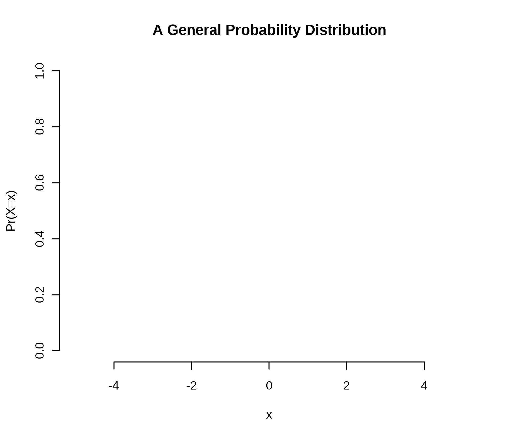
Distributions are nouns. Sentences are incomplete without verbs – parameters. We need both; it is for this reason that the former slide is true. We do not always have a grounding for either the name or the parameter.
Continuous vs. Discrete Distributions
The differences are sums versus integrals. Why?
- Histograms or
- Density Plots
The probability of exactly any given value is zero on a true continuum.
Expectation
\[E(X) = \sum_{x \in X} x \cdot Pr(X=x)\]
\[E(X) = \int_{x \in X} x \cdot f(x)dx\]
Variance
\[E[(X-\mu)^2] = \sum_{x \in X} (x-\mu)^2 \cdot Pr(X=x)\]
\[E((X-\mu)^2) = \int_{x \in X} (x-\mu)^2 \cdot f(x)dx\]
Functions
Probability distributions are mathematical formulae expressing likelihood for some set of qualities or quantities. They have names: nouns. They also have verbs: parameters. Like a proper English sentence, both are required.
Our Applications
- The normal will be defined by a mean \(\mu\) (mu) and standard deviation \(\sigma\) - sigma [or variance, \(\sigma^2\)]
- The uniform will be defined by a minimum and maximum.
- The Poisson will be defined an arrival rate \(\lambda\) – lambda.
- The binomial will be defined by a number of trials \(n\) and a probability \(\pi\).
The Normal [Gaussian]
\[f(x|\mu,\sigma^2 ) = \frac{1}{\sqrt{2\pi\sigma^{2}}} \exp \left[ -\frac{1}{2} \left(\frac{x - \mu}{\sigma}\right)^{2}\right]\]
Is the workhorse of statistics. Key features:
- Is self-replicating: sums of normals are normal.
- If \(X\) is normal, then \[ Z = \frac{(X - \mu)}{\sigma} \] is normal.
- Aside, \[z_{x} = \frac{(x - \overline{x})}{s_{x}}\] has mean 0 and variance/std. dev. 1.
The z-transform
The generic z-transformation applied to a variable \(x\) centers [mean\(\approx\) 0] and scales [std. dev. \(\approx\) variance \(\approx\) 1] to \(z_{x}\) for population parameters. \(\approx\) is approximately equal to.
\[z = \frac{x - \mu}{\sigma}\]
data.frame(Norm = rnorm(10000)) %>% ggplot() + aes(x=Norm) + geom_density() + labs(x="Z - Normal(0,1)")
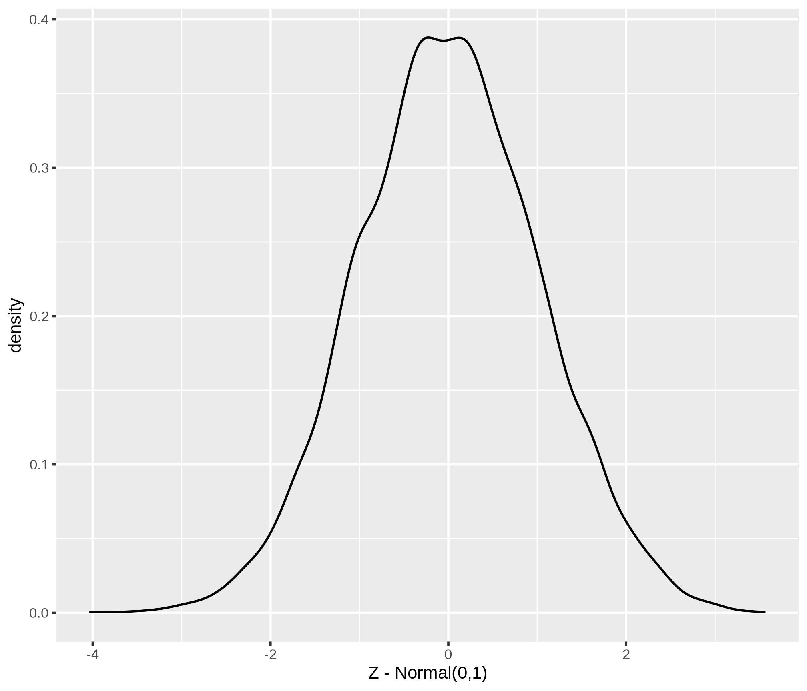
In samples, the 0 and 1 are exact; these are features of the mean and degrees of freedom from last time.
\[ z = \frac{x - \overline{x}}{s_{x}} \].
where \(\overline{x}\) is the sample mean of \(x\) and \(s_{x}\) is the sample standard deviation of \(x\). Take the example of earnings.
Suppose earnings in a community have mean 55,000 and standard deviation 10,000. This is in dollars. Suppose I earn 75,000 dollars. First, if we take the top part of the fraction in the \(z\) equation, we see that I earn 20,000 dollars more than the average (75000 - 55000). Finishing the calculation of z, I would divide that 20,000 dollars by 10,000 dollars per standard deviation. Let’s show that.
\[ z = \frac{75000 dollars - 55000 dollars}{\frac{10000 dollars}{SD}} = +2 SD \].
I am 2 standard deviations above the average (the +) earnings. All \(z\) does is re-scale the original data to standard deviations with zero as the mean.
Suppose I earn 35,000. That makes me 20,000 below the average and gives me a z score of -2. I am 2 standard deviations below average (the -) earnings.
\(z\) is an easy way to assess symmetry. The mean of z is always zero but the distribution of z to the left and right of zero is informative. If they are roughly even, then symmetry is likely. If the signs are uneven, then symmetry is unlikely. In R, \(z\) is automated with the scale() command. The last line uses a table and the sign command to show me the positive and negative z.
# Generate random normal income
DataF <- data.frame(Hypo.Income = rnorm(1000, 55000, 10000)) %>%
# z-transform income [mean 55000ish, std. dev. 10000ish]
mutate(z.Income = scale(Hypo.Income))
# Show the data.frame
head(DataF)
## Hypo.Income z.Income
## 1 51603.96 -0.3470398
## 2 61108.74 0.5885206
## 3 48488.63 -0.6536840
## 4 79116.85 2.3610707
## 5 53355.25 -0.1746595
## 6 56585.27 0.1432730
table(sign(DataF$z.Income))
##
## -1 1
## 505 495
Probability Distributions
Distributions in R are defined by four core parts:
- r, for random variables
- p, for cumulative probability (given x) [counting from left] \(Pr(X\leq x)\)
- d, for density/probability that \(Pr(X=x)\) or \(f(x)\)
- q, for quantile (given p): x such that \(Pr(X\leq q)=p\)
A Grape Escape?
A filling process is supposed to fill jars with 16 ounces of grape jelly, according to the label, and regulations require that each jar contain between 15.95 and 16.05 ounces.
- Suppose that the uniform random process of filling in known to fill between 15.9 and 16.1 ounces uniformly.
- Plot the histogram of 1000 simulated values. NB: unif is the noun with boundaries a (default 0) and b(default 1).
Jars <- runif(1000, 15.9, 16.1)
Jars %>% data.frame() %>% ggplot() + aes(x=Jars) + geom_histogram(binwidth=0.005)
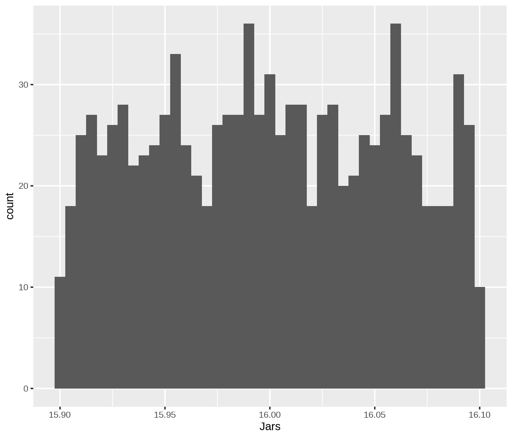
- What is the probability that a random jar is outside of requirements?
Exactly? 50 percent because 25 percent are between 15.9 and 15.95 and 25 percent are between 16.05 and 16.1.
table(Jars < 15.95 | Jars > 16.05) # | captures or
##
## FALSE TRUE
## 518 482
- Scale (z) the jars and summarise them.
summary(scale(Jars))
## V1
## Min. :-1.76027
## 1st Qu.:-0.84756
## Median :-0.01648
## Mean : 0.00000
## 3rd Qu.: 0.86893
## Max. : 1.77237
sd(scale(Jars))
## [1] 1
- The mean of the normal random process of filling is known to be 16.004 ounces with standard deviation 0.028 ounces.
- What is the probability that a random jar is outside of requirements? NB: norm is the noun with mean (default 0) and sd (default 1).
pnorm(15.95, 16.004, 0.028) + pnorm(16.05, 16.004, 0.028, lower.tail=FALSE)
## [1] 0.07709829
- What is the probability that a random jar contains more than 16.1 ounces?
1-pnorm(16.1, 16.004, 0.028)
## [1] 0.0003033834
- What is the probability that a random jar contains less than 16.04 ounces?
pnorm(16.04, 16.004, 0.028)
## [1] 0.9007286
- 95% of jars, given a normal, will contain between XXX and XXX ounces of jelly.
qnorm(c(0.025,0.975), 16.004, 0.028)
## [1] 15.94912 16.05888
- The bottom 5% of jars contain, at most, XXX ounces of jelly.
qnorm(0.05, 16.004, 0.028)
## [1] 15.95794
- The top 25% of jars contain at least XXX ounces of jelly.
qnorm(0.75, 16.004, 0.028)
## [1] 16.02289
Bernoulli Trials and the Binomial
Suppose the variable of interest is discrete and takes only two values: yes and no. For example, is a customer satisfied with the outcomes of a given service visit?
For each individual, because the probability of yes \(\pi\) and no 1-\(\pi\) must sum to one, we can write:
\[f(x|\pi) = \pi^{x}(1-\pi)^{1-x}\]
For multiple identical trials, we have the Binomial:
\[f(x|n,\pi) = {n \choose k} \pi^{x}(1-\pi)^{n-x}\]
where \[{n \choose k} = \frac{n!}{(n-k)!}\]
The Binomial
Scottish Pounds
Informal surveys suggest that 15% of Essex shopkeepers will not accept Scottish pounds. There are approximately 200 shops in the general High Street square.
- Draw a plot of the distribution and the cumulative distribution of shopkeepers that do not accept Scottish pounds.
Scots <- data.frame(Potential.Refusers = 0:200) %>% mutate(Prob = round(pbinom(Potential.Refusers, size=200, 0.15), digits=4))
Scots %>% ggplot() + aes(x=Potential.Refusers, y=Prob) + geom_point() + labs(x="Refusers", y="Prob. of x or Less Refusers") -> Plot1
Plot1
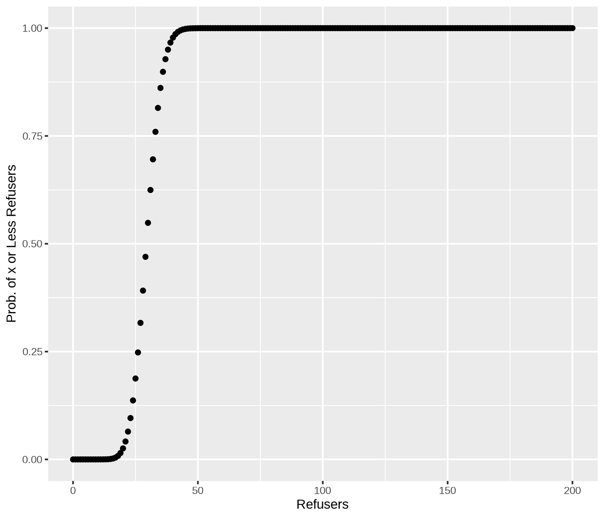
A Nicer Plot
library(plotly)
ggplotly(Plot1)
- What is the probability that 24 or fewer will not accept Scottish pounds?
pbinom(24, 200, 0.15)
## [1] 0.1368173
- What is the probability that 25 or more shopkeepers will not accept Scottish pounds?
1-pbinom(24, 200, 0.15)
## [1] 0.8631827
- With probability 0.9 [90 percent], XXX or fewer shopkeepers will not accept Scottish pounds.
qbinom(0.9, 200, 0.15)
## [1] 37
Geometric Distributions
How many failures before the first success? Now defined exclusively by \(p\). In each case, (1-p) happens \(k\) times. Then, on the \(k+1^{th}\) try, p. Note 0 failures can happen…
\[Pr(y=k) = (1-p)^{k}p\]
Example: Entrepreneurs
Suppose any startup has a \(p=0.1\) chance of success. How many failures?
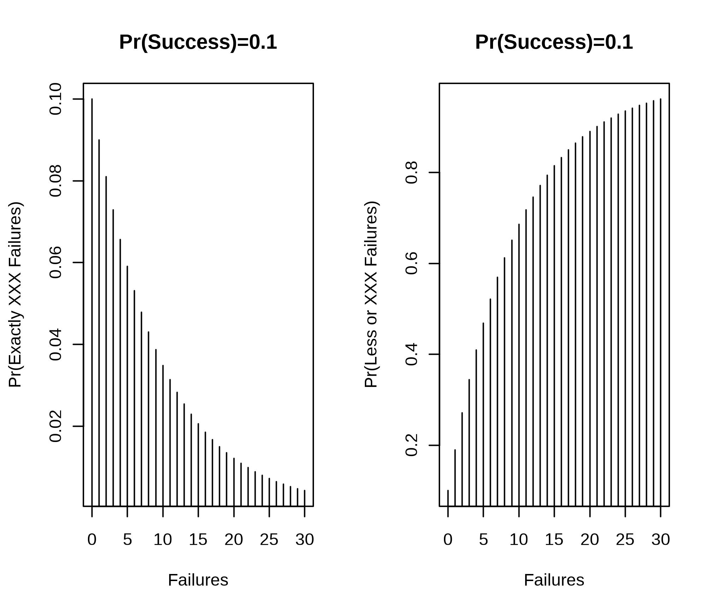
Example: Entrepreneurs
Suppose any startup has a \(p=0.1\) chance of success. How many failures for the average/median person?
qgeom(0.5,0.1)
## [1] 6
- [Geometric] Plot 1000 random draws of “How many vendors until one refuses my Scottish pounds?”
Geoms.My <- data.frame(Vendors=rgeom(1000, 0.15))
Geoms.My %>% ggplot() + aes(x=Vendors) + geom_histogram(binwidth=1)
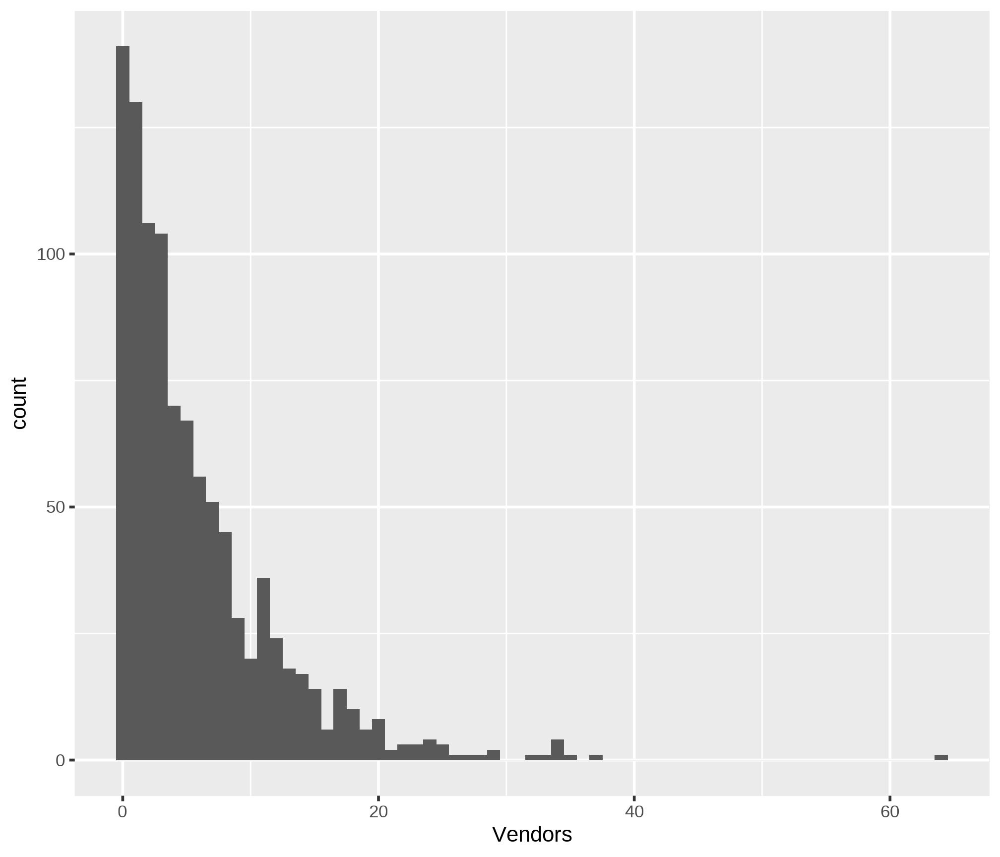
We could also do something like.
plot(seq(0,60), pgeom(seq(0,60), 0.15))
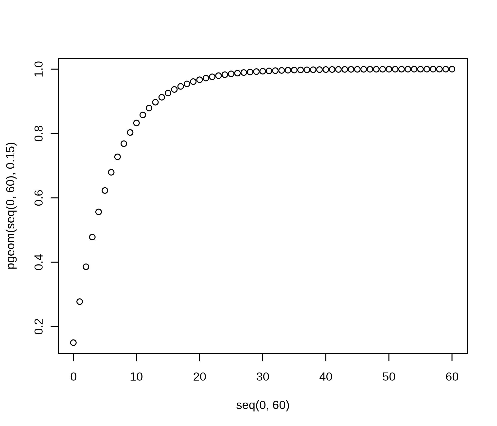
Events: The Poisson
Take a binomial with \(p\) very small and let \(n \rightarrow \infty\). We get the Poisson distribution (\(y\)) given an arrival rate \(\lambda\) specified in events per period.
\[f(y|\lambda) = \frac{\lambda^{y}e^{-\lambda}}{y!}\]
Examples: The Poisson
- Walk in customers
- Emergency Room Arrivals
- Births, deaths, marriages
- Prussian Cavalry Deaths by Horse Kick
- Fish?
Air Traffic Controllers
FAA Decision: Expend or do not expend scarce resources investigating claimed staffing shortages at the Cleveland Air Route Traffic Control Center.
Essential facts: The Cleveland ARTCC is the US’s busiest in routing cross-country air traffic. In mid-August of 1998, it was reported that the first week of August experienced 3 errors in a one week period; an error occurs when flights come within five miles of one another by horizontal distance or 2000 feet by vertical distance. The Controller’s union claims a staffing shortage though other factors could be responsible. 21 errors per year (21/52 errors per week) has been the norm in Cleveland for over a decade.
- Plot a histogram of 1000 random weeks. NB: pois is the noun with no default for \(\lambda\) – the arrival rate.
DF <- data.frame(Close.Calls = rpois(1000, 21/52))
ggplot(DF) + aes(x=Close.Calls) + geom_histogram()
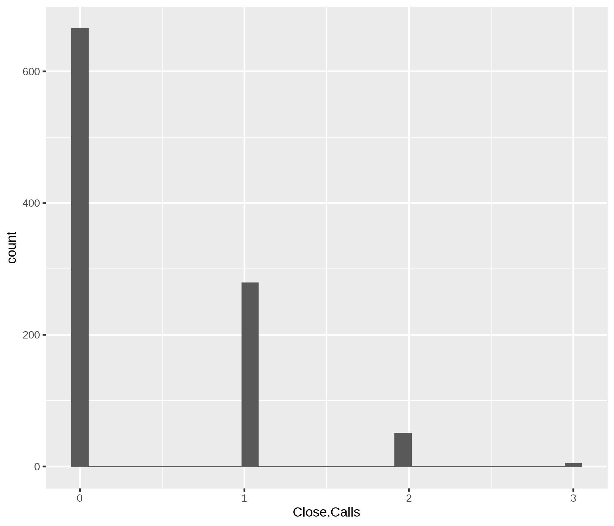
ggplot(DF) + aes(x=Close.Calls) + stat_ecdf(geom="step")
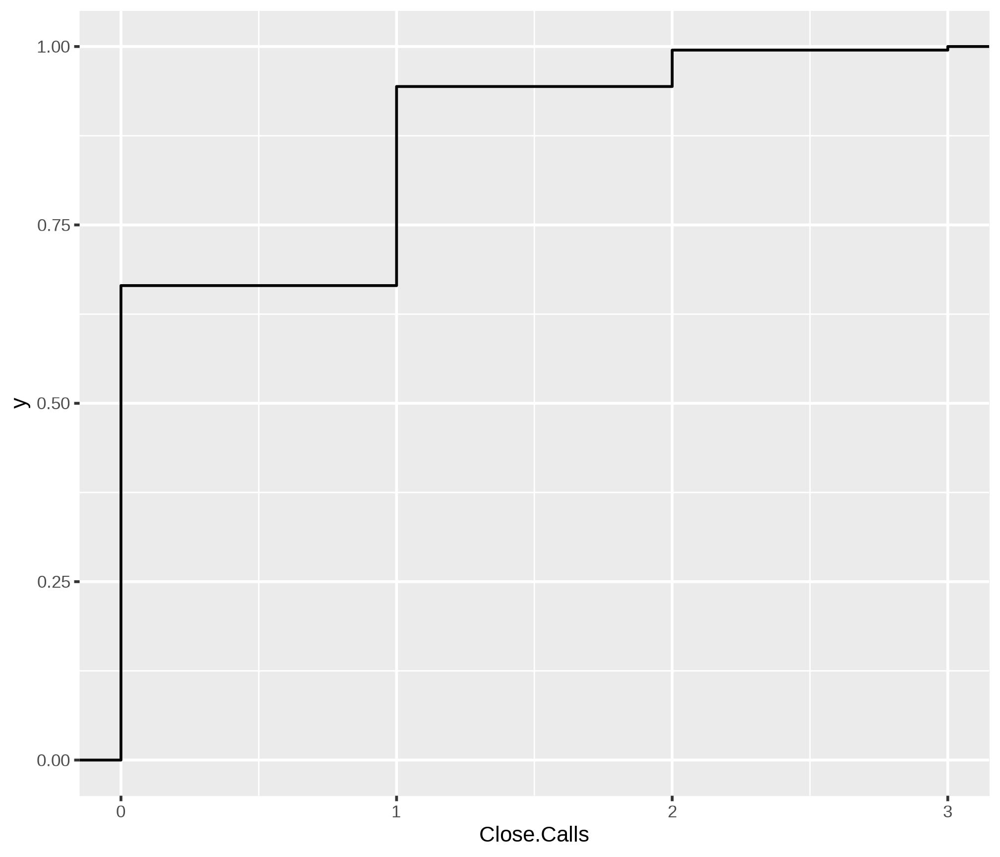
- Plot a sequence on the x axis from 0 to 5 and the probability of that or fewer incidents along the y. seq(0,5)
DF <- data.frame(x=0:5, y=ppois(0:5, 21/52))
ggplot(DF) + aes(x=x, y=y) + geom_col()
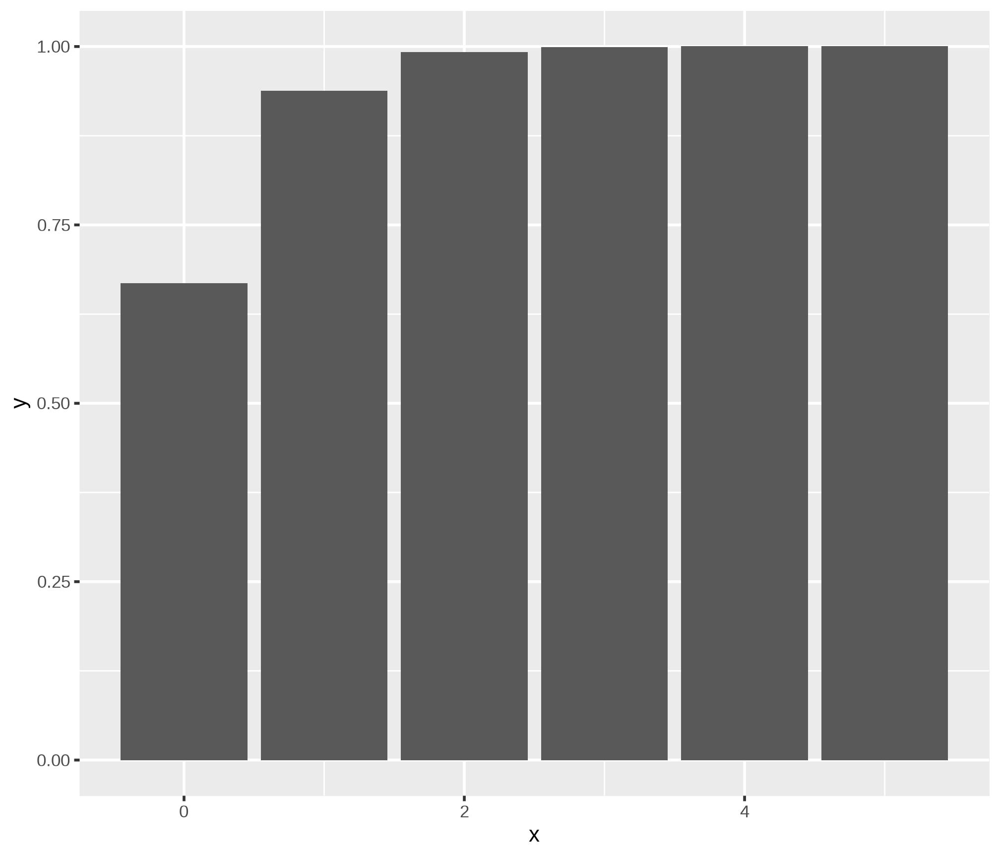
- What would you do and why? Not impossible
- After analyzing the initial data, you discover that the first two weeks of August have experienced 6 errors. What would you now decide? Well, once is 0.0081342. Twice, at random, is that squared. We have a problem.
Deaths by Horse Kick in the Prussian cavalry?
library(vcd)
data(VonBort)
head(VonBort)
## deaths year corps fisher
## 1 0 1875 G no
## 2 0 1875 I no
## 3 0 1875 II yes
## 4 0 1875 III yes
## 5 0 1875 IV yes
## 6 0 1875 V yes
mean(VonBort$deaths)
## [1] 0.7
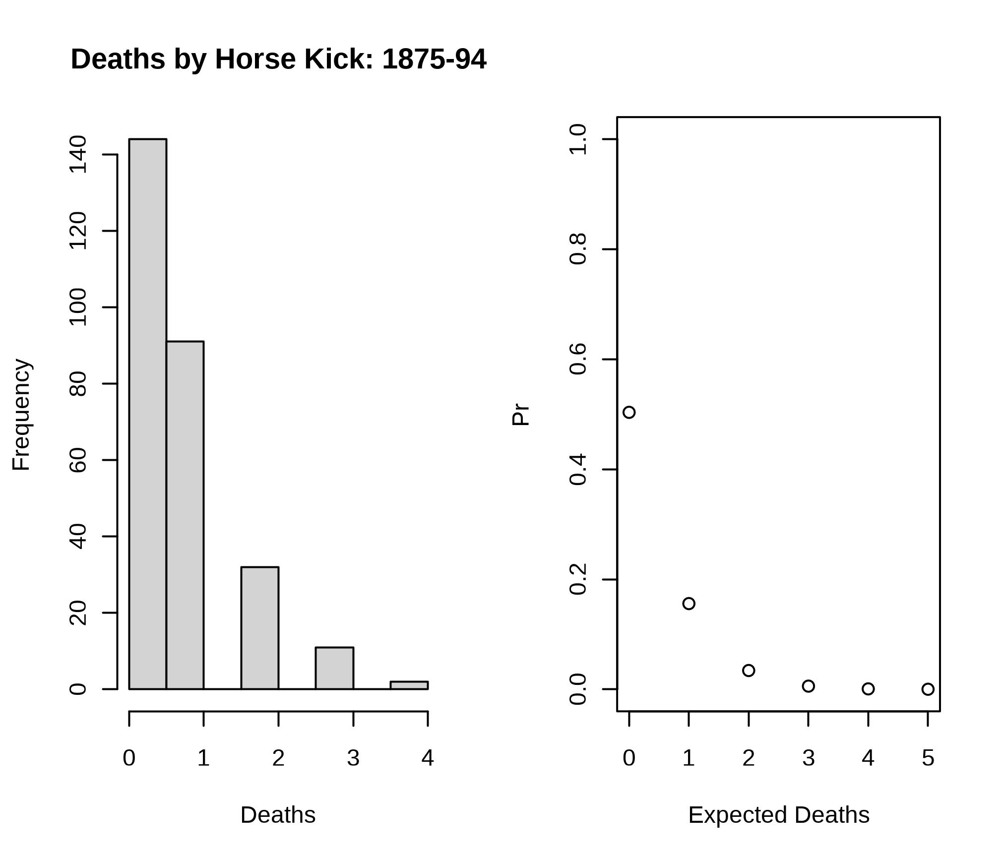